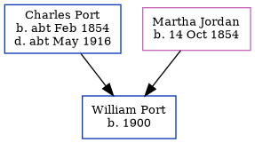

Charles M Port 1890 -
[ Home ] | [ Calendar ] | [ Surnames Index ] | [ Census Index ] | [ Family History ]The child of Charles Port (a grocer and confectioner) and Martha Jordan (a shop keeper), Charles Port, the third cousin twice-removed on the mother's side of Nigel Horne, was born in Cheriton, Kent, England in 18901,2.
During his life, he was living at Park Terrace in Cheriton on Apr 5, 18911; and at Enbrook Buildings in Cheriton on Mar 31, 19012.
Parents
- Charles Randle was born c. Feb 1854
- Martha Matilda was born on Oct 14, 1854
Citations
- 1891 England, Wales & Scotland Census - Findmypast (was age 1 and the son of the head of the household)
- 1901 England, Wales & Scotland Census - Findmypast (was age 11 and the son of the head of the household)
Family Tree
Generated by ged2site. Last updated on Jun 11, 2024